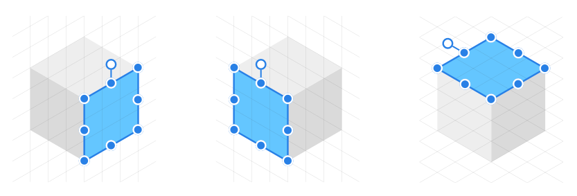
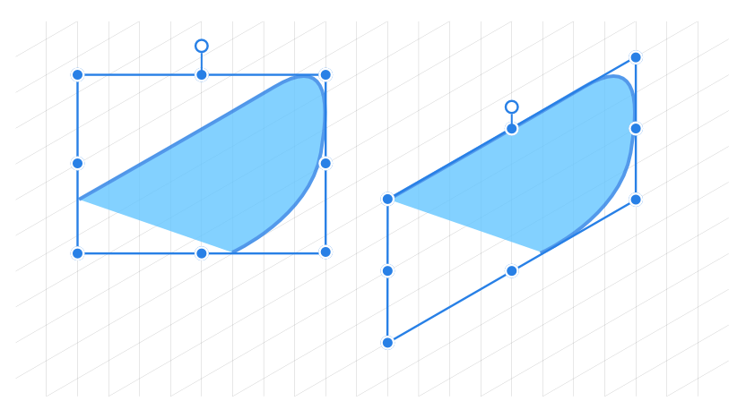
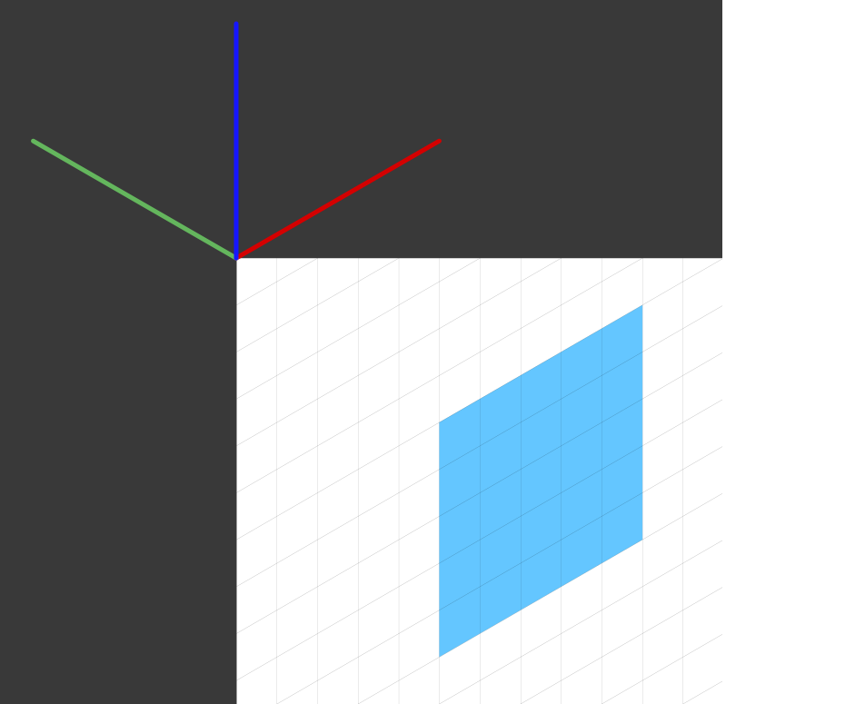
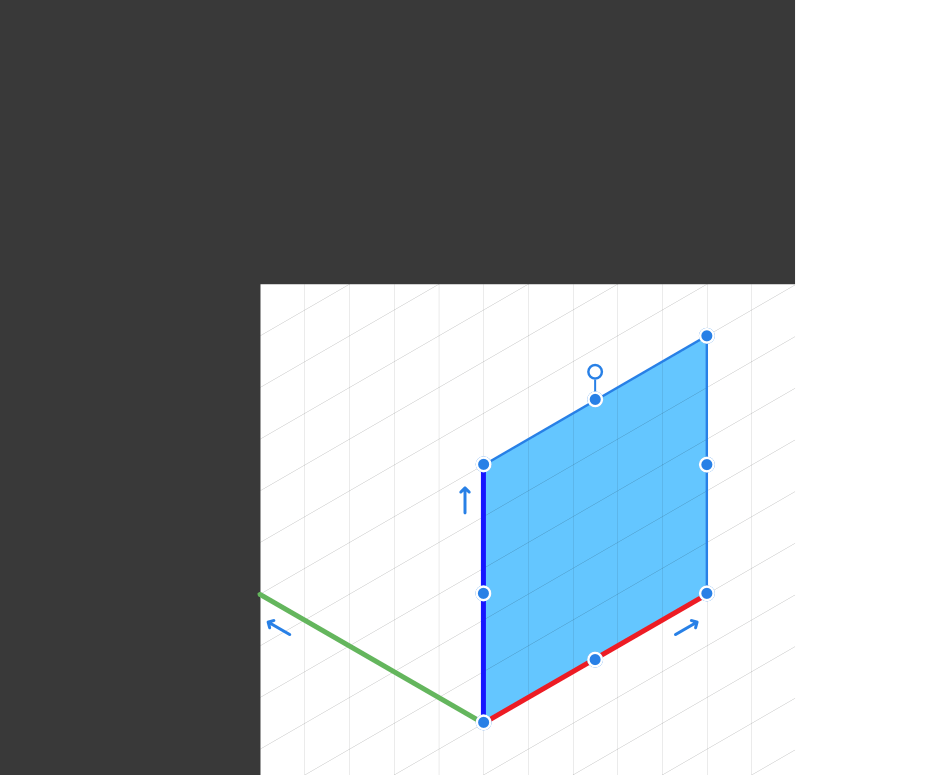
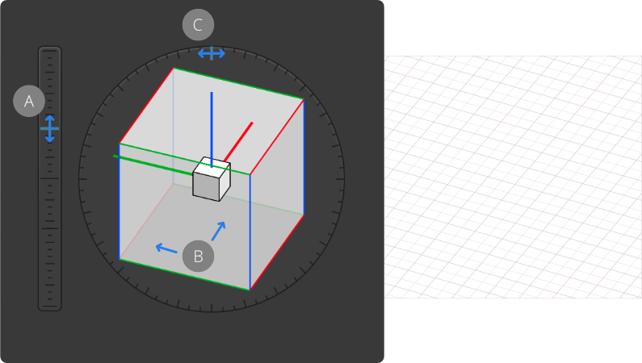

Affinity Designer makes use of highly customizable isometric and other axonometric grids, perfect for UI/game design, digital design models, mock ups or designs which benefit from this style.
Isometric drawing and grid.
About isometric and axonometric grids
Isometric and other axonometric grids are, by nature, parallel projections. This means that grid lines never converge to a vanishing point as in perspective projections. Perspective projections are not supported in Affinity.
Affinity Designer lets you set up different types of grid in different ways:
Isometric (with planes): Easy setup via the Isometric panel.
Trimetric left and isometric (with planes): as presets from Grid and Axis Manager.
Dimetric, trimetric, oblique, triangular: from Advanced tab's Grid type option in Grid and Axis Manager.
For any axonometric grids, planes can be switched between so you can apply in-plane transforms on front, side and top planes in turn.

Front, Side and Top planes of isometric grid showing selected object transformed to fit in-plane.
Once a grid is set up, you can draw geometric shapes, art text and gradients directly on the active plane and selectively transform curves, closed shapes and placed images to the plane of your choice using the Move Tool.
About snapping controls
Grids work best when combined with snapping. Object handles and curve nodes snap precisely to any grid line and line intersections.
Grids can be based on any document unit, shown when switching on the rulers.
Using Cycle Selection boxes
When drawing curves on plane, take advantage of the Cycle Selection Box setting on the Move Tool’s context toolbar. Its 'Planar bounds' option transforms the curve’s selection box (not the object) to that of the current plane, allowing easier positioning/snapping of curve to grid. Once Planar bounds is set, fitting the curve to a different plane subsequently will change the planar box too.

Selection box (not object) changed to 'Planar bounds'.
For out-of-plane editing, choose a Cycle Selection Box setting of ‘Base Box’ or ‘Regular Bounds’.
To create an isometric grid:
From the View menu, select Isometric from the Studio options to display the Isometric panel.
Click Modify Grid.
On the now displayed Grid and Snapping Axis dialog, check Show Grid.
To jump between grid planes:
Do one of the following:
From the Isometric panel, click Front, Side or Top.
Press the apostrophe (') to cycle between planes.
To set the grid spacing:
On the Grid and Snapping Axis dialog, set the Spacing and Divisions values.
To set grid snapping:
From the Toolbar, select Snapping.
Select a Preset, e.g. Curve drawing, ensuring that Snap to grid is also checked.
This ensures that objects will fit accurately to grid lines.
To draw geometric shapes directly on the grid:
From the Isometric panel, enable Edit in plane.
With a shape tool selected, drag out a chosen shape. You can snap your shape to the grid on creation when dragging initially from any grid intersection or when repositioning and/or scaling the shape.
To fit two-dimensional objects to plane:
Select a curve, closed shape, artistic text or image.
On the Isometric panel, choose a plane (Front, Side, Top) to send the object to.
On the same panel, select Fit to plane.
To transform any object on the grid:
Select the object in the plane, then do one of the following:
On the Isometric panel, ensure the correct Current plane is set (must be the same plane as that which the object was originally drawn on), then use the panel's 180° flip and 90° rotate options.
To rotate the object on the page, drag its Rotation Handle clockwise or anti-clockwise. Press the to rotate in 15° increments.
To change other isometric grid settings:
On the Isometric panel, select Grid Settings. From here, you can:
Switch on the grid origin (axis editing handles)
Add intermediate grid angles for snapping or constraining to.
Add an axis perpendicular to the current plane for snapping or constraining to.
Set the grid color and transparency
Advanced grids
The Grid and Axis Manager is ideal for laying out advanced axonometric grids as well as two-dimensional fixed grids and isometric grids.
Instead of the commonly used isometric grid set up via the Isometric panel, a choice of other project grid presets can also be selected (e.g., dimetric, triangular) from the Manager; you can even create custom axonometric grids with options for enabling plane sets, grid sizing, custom aspect ratios and angles for more advanced use.
If you're looking beyond the presets such as isometric you can customize the grid to your liking.
Grid origin
The grid origin is a point at which axes meet and is the corner of the logical plane. The origin is shown as a set of axis handles (in red, green and blue) which can be extended or repositioned on the page.
For most axonometric grids, the axis handles remain locked in relation to each other but can all be lengthened by the same amount simultaneously to set grid spacing.
The origin is set by dragging the grid origin (top left corner of page) by its intersection point and positioning it on the page. As you change between planes, the handles on the active plane will be shown thicker.


You can snap the grid origin to an object on any plane and equally snap an object to a fixed grid origin.
Setting up additional axis
You can introduce additional angles and an extra axis to your grid that gives you extra options for snapping and constraining object edges, corners and curve nodes to.
Intermediate angles—adds additional angles between axes that can be snapped or constrained to.
Intermediate divisions—Divides the angle between axes by a set number (set to 4 for 22.5° divisions for origami).
Plane perpendicular axis—creates another axis perpendicular to any active plane on axonometric grids. Create plane set must be enabled.
Horizontal axis—adds an additional horizontal axis for constraining or snapping.
Vertical axis—adds an additional vertical axis for constraining or snapping.
Understanding axis and snapping colors
You may see the following colors which indicate different axes while snapping or constraining:
Red line: First axis (X axis on basic square grid)
Green line: Second axis (Y axis on basic square grid)
Blue line: Third axis (Z axis; axonometric grids)
Yellow node: Intersection point
Purple node: construction snap
Orange node: intermediate angles
To set your advanced grid:
From the View menu, select Grid and Axis Manager.
Do one of the following:
Select a Parallel perspective preset from the Presets pop-up menu.
Click Advanced, then from the Grid type pop-up menu, select a grid, then edit its settings in the dialog.
To view and position the grid origin:
From the Grid and Axis Manager, check Show axis editing handles. By default, the grid origin will show at the top-left corner of your page.
Using any tool, drag the grid origin intersection to a point on your page, e.g. a corner of a geometric shape.
To set the grid spacing:
On the page, drag the end of one of the red, green or blue axis-editing handles outwards or inwards to size the grid. If snapped to an object you can size the grid to the object.
Custom grids using Cube mode
The Grid & Axis Manager's Cube mode offers a natural approach to setting up an axonometric grid. You can alter the elevation, orientation and roll of the cube, which automatically repositions your grid on the page.

Changing the Elevation (A), Orientation (B) and Roll (C) when using the grid Cube mode.
Grid cube advantages
Visual approach to planar grid setup
Natural control of correctly foreshortened grid axis based on a fixed scale
Controllable elevation point, with separate control of horizontal orientation and roll
Quick adjustment of the cube for complimentary axis with common up direction
Extends existing snapping/constraining system
To set up an axonometric grid using Cube mode:
From the View menu, select Grid and Axis Manager.
Set the Mode to be 'Cube'.
Set the Cube Scale which is the edge size of the cube and any Divisions value for all axes.
Change the Elevation (E) by dragging the blue marker on the vertical slider next to the cube (or input a specific E value), using available snapping points if needed.
On the cube, adjust the cube Orientation (O) by dragging left or right (or enter an O value). The angle and the lengths of the grid axes are derived from the cube orientation.
On the outer ring gage around the cube, drag the blue marker to adjust the Roll (R) setting.
Custom grids
For custom grids, any grid origin's axis editing handle’s length and direction can be changed in relation to and independently of other handles.
To create a custom grid:
From the Grid and Axis Manager, select a Grid type of either Two axis custom or Triangular custom.
Enable Uniform to keep grid spacing the same across axes.
Enable Create plane set to activate and configure the Up axis.
Enable Fixed aspect ratio to configure the aspect ratio between axes. Disable to keep the same aspect ratios for Second and Up axes.
Do one of the following:
Configure Spacing, Division and Angle setting for First, Second and Up axes.
With the Move Tool enabled, drag an axis editing handle on the grid origin inwards or outwards, changing its angle.
 To jump between grid planes:
To jump between grid planes: